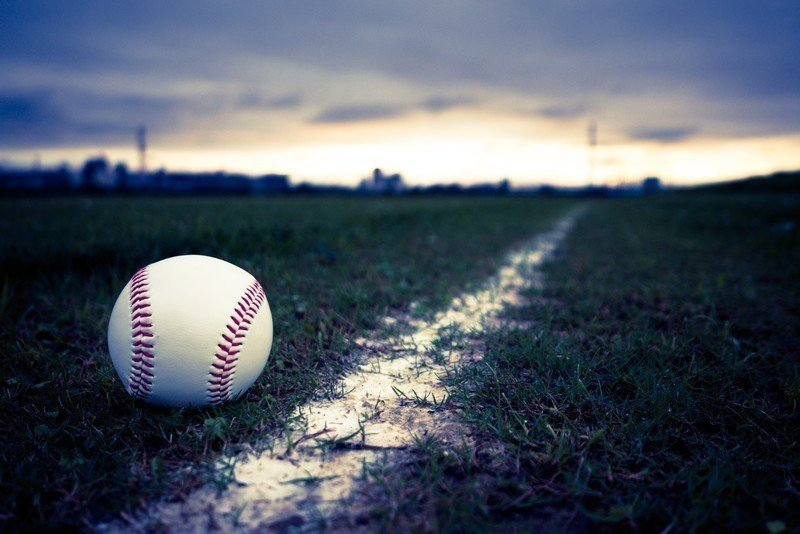

父の生き方を僕は知らない。
幼い頃から見ていた大きな背中が未だに記憶に焼きついている。
子どもの頃は学校の授業参観も運動会にも来てくれなかった。キャッチボールだってしたことがない。だから、僕は父が投げかけてくるボールを心のどこかで拒否し続けていた。
でも大人になり、社会で働き始めて、ようやく父が歩んできた道のりが気になった。
早朝から会社に行って、休日は家で寝ふけってはたまに散歩に出かけて、母とは時々口喧嘩をして、いつも大食いの父の心はどこにあるのかを知りたくなったのだ。
そんなことを思っていたある日曜日、たまたま街で散歩をしている父を見かけた。
声をかけてもよかったのだが、なぜか父のあとをついていくことにした。
父の歩くスピードは昔と変わっていない。子どもの頃は早すぎて追いつけなかったくらいだ。
でも、成長にしたがってそういうこともなくなった。何となく父の姿が小さく見える。そんな感傷的な気持ちを秋の風が包み込む。
父はある場所の前でふと足を止めた。
どうやら行き慣れているゴルフショップのようだ。ガラス越しにゴルフクラブを吟味している様子で、その視線はまさに真剣そのもの。時折ゴルフショットの素振りなんかしている。
「確かにゴルフにはよく出かけるよな……」
なんて思いながら父の後ろ姿を眺めていた。すると、父は再び歩き出した。
今度は小さな本屋の前で何かを考えているようだ。
少しして何か決意した表情で店内に入っていく。5分ほどして外に戻ってきた。父は満足げな顔で駅のある方向へ歩を進める。
父は駅のホームでいつも話している行動を取った。
「電車は後方車両に乗るんだ。そっちの方が空いている場合が多いから」
自然と脳内でその声が再生される。
電車の中で父はさっき買った本を取り出す。ガードの固い父らしく、本にはカバーがされている。
「いつも何の本を読んでいるんだろう……」
素朴な疑問が生まれる。
父が本を読む。その光景は、決して当たり前ではないのだ。
1本電車を乗り継いで、父はある駅で降りた。
見覚えのある駅名。確かここは祖父の墓がある最寄り駅だ。
父と祖父の仲は、僕から見ても仲のいいものには見えなかった。もともと無口な父と話すことが好きな祖父は相反する存在だったのかもしれない。
でも父と息子の関係はいくら時代が変わっても、変わらないものなんだなと心のどこかで思った。
祖父の墓に参る後ろ姿を見て、父のことを知っているようで何も知らないことに気がついた。一緒に暮らしてきた家族なのに、何も知らなかったのだ。そんな状態だったのに、僕は父をどこかで拒んでいた。
それはもうやめよう。これからは少しずつお互いを知っていこうと思った。
日も暮れてきて、このまま帰路につくと思っていたが、父はある老舗の蕎麦屋に入っていった。
一瞬躊躇ったが、その店に入ることにした。
「盛り蕎麦の大盛り1つ。それと日本酒の熱燗を」
少し疲れたような、それでもあまり変わっていないような低い声で父はそう注文をつけた。小さなテレビに映る野球の試合を見ながら、父は蕎麦がやってくるのを待っている。
店内はいつの間にか父と僕の2人だけになっていた。
何か頼もうとしていたその時、いつもの声が聞こえてきた。
「お前なんだろ？ こっちで一緒に食べよう」
父のお猪口にゆっくりと熱燗を注ぐ。何でもない日曜日の夜に僕らは乾杯する。
やがて親子2人分の盛り蕎麦大盛りがやってきた。それをすすりながら、父はボールを投げかけてくる。
「最近仕事の方はどうなんだ？ うまくいっているか？」
「やっぱり新人1年目は色々覚えなきゃだからね」
そうボールを投げ返すと、父は
「そうか、頑張れよ」
と言って微笑む。
そのまなざしには、子どもの僕に向けたあの頃と同じ優しさがあったような気がした。